5.5 Von einer regulären Grammatik zu einem endlichen Automaten an einem Beispiel./course1/wly/05/05-regular-grammar-to-fsm.wly:2:11
5.5 Von einer regulären Grammatik zu einem endlichen Automaten an einem Beispiel./course1/wly/05/05-regular-grammar-to-fsm.wly:2:11
Theorem 5.5.1./course1/wly/05/05-regular-grammar-to-fsm.wly:4:5 ./course1/wly/05/05-regular-grammar-to-fsm.wly:4:5 Zu jeder kontextfreien Grammatik ./course1/wly/05/05-regular-grammar-to-fsm.wly:5:9$G = (\Sigma, N, S, P)$./course1/wly/05/05-regular-grammar-to-fsm.wly:5:42 ./course1/wly/05/05-regular-grammar-to-fsm.wly:5:65 gibt es einen Kellerautomaten./course1/wly/05/05-regular-grammar-to-fsm.wly:6:9 ./course1/wly/05/05-regular-grammar-to-fsm.wly:7:9$M = (\Sigma, Q, \Gamma, \qstart, \delta)$./course1/wly/05/05-regular-grammar-to-fsm.wly:7:9,./course1/wly/05/05-regular-grammar-to-fsm.wly:7:51 der die./course1/wly/05/05-regular-grammar-to-fsm.wly:7:51 gleiche Sprache akzeptiert, also ./course1/wly/05/05-regular-grammar-to-fsm.wly:8:9$L(G) = L(M)$./course1/wly/05/05-regular-grammar-to-fsm.wly:8:42../course1/wly/05/05-regular-grammar-to-fsm.wly:8:55
In diesem Unterkapitel wollen wir das Gelernte an einem./course1/wly/05/05-regular-grammar-to-fsm.wly:10:5 konkreten Beispiel anwenden. Wir beginnen (1) mit einer./course1/wly/05/05-regular-grammar-to-fsm.wly:11:5 Beschreibung eines Formats in natürlicher Sprache; (2)./course1/wly/05/05-regular-grammar-to-fsm.wly:12:5 basteln uns daraus mit Hilfe des "Baukastenprinzips" eine./course1/wly/05/05-regular-grammar-to-fsm.wly:13:5 reguläre Sprache; (3) säubern diese, indem wir Regeln der./course1/wly/05/05-regular-grammar-to-fsm.wly:14:5 Form ./course1/wly/05/05-regular-grammar-to-fsm.wly:15:5$X \rightarrow Y$./course1/wly/05/05-regular-grammar-to-fsm.wly:15:10 und ./course1/wly/05/05-regular-grammar-to-fsm.wly:15:27$X \rightarrow a$./course1/wly/05/05-regular-grammar-to-fsm.wly:15:32 eliminieren;./course1/wly/05/05-regular-grammar-to-fsm.wly:15:49 (4) bauen einen nichtdeterministischen endlichen Automaten;./course1/wly/05/05-regular-grammar-to-fsm.wly:16:5 (5) transformieren diesen in einen deterministischen./course1/wly/05/05-regular-grammar-to-fsm.wly:17:5 endlichen Automaten../course1/wly/05/05-regular-grammar-to-fsm.wly:18:5
Unsere Sprache
./course1/wly/05/05-regular-grammar-to-fsm.wly:23:5$L$./course1/wly/05/05-regular-grammar-to-fsm.wly:23:20
soll so ähnlich sein wie die der./course1/wly/05/05-regular-grammar-to-fsm.wly:23:23
erlaubten Domainnamen, allerdings mit ein paar./course1/wly/05/05-regular-grammar-to-fsm.wly:24:5
Abänderungen, um die obigen Transformationen spannender zu./course1/wly/05/05-regular-grammar-to-fsm.wly:25:5
machen. Ein Wort in unserer Sprache besteht aus einer./course1/wly/05/05-regular-grammar-to-fsm.wly:26:5
nichtleeren Folge von
./course1/wly/05/05-regular-grammar-to-fsm.wly:27:5Labels./course1/wly/05/05-regular-grammar-to-fsm.wly:27:28
die jeweils durch einen
./course1/wly/05/05-regular-grammar-to-fsm.wly:27:35../course1/wly/05/05-regular-grammar-to-fsm.wly:27:61
./course1/wly/05/05-regular-grammar-to-fsm.wly:27:63
separiert sind. Jedes Label ist eine nichtleere Folge von./course1/wly/05/05-regular-grammar-to-fsm.wly:28:5
Blöcken (ein nichtleerer String aus Buchstaben und Zahlen),./course1/wly/05/05-regular-grammar-to-fsm.wly:29:5
separiert durch
./course1/wly/05/05-regular-grammar-to-fsm.wly:30:5:./course1/wly/05/05-regular-grammar-to-fsm.wly:30:22
oder
./course1/wly/05/05-regular-grammar-to-fsm.wly:30:24-./course1/wly/05/05-regular-grammar-to-fsm.wly:30:31
aber niemals durch beides./course1/wly/05/05-regular-grammar-to-fsm.wly:30:33
innerhalb eines Blockes. Also:./course1/wly/05/05-regular-grammar-to-fsm.wly:31:5
bla:bla:blue.xyz-12-zx.b:x:yyy:xxx:aaa./course1/wly/05/05-regular-grammar-to-fsm.wly:35:10
ist ein Wort in ./course1/wly/05/05-regular-grammar-to-fsm.wly:37:5$L$./course1/wly/05/05-regular-grammar-to-fsm.wly:37:21,./course1/wly/05/05-regular-grammar-to-fsm.wly:37:24 aber./course1/wly/05/05-regular-grammar-to-fsm.wly:37:24
a:b-c.hello./course1/wly/05/05-regular-grammar-to-fsm.wly:41:10
ist kein Wort in
./course1/wly/05/05-regular-grammar-to-fsm.wly:43:5$L$./course1/wly/05/05-regular-grammar-to-fsm.wly:43:22,./course1/wly/05/05-regular-grammar-to-fsm.wly:43:25
da das erste Label die Separatoren./course1/wly/05/05-regular-grammar-to-fsm.wly:43:25
./course1/wly/05/05-regular-grammar-to-fsm.wly:44:5:./course1/wly/05/05-regular-grammar-to-fsm.wly:44:6
und
./course1/wly/05/05-regular-grammar-to-fsm.wly:44:8-./course1/wly/05/05-regular-grammar-to-fsm.wly:44:14
mischt. Habe ich
./course1/wly/05/05-regular-grammar-to-fsm.wly:44:16$L$./course1/wly/05/05-regular-grammar-to-fsm.wly:44:34
genau genug beschrieben?./course1/wly/05/05-regular-grammar-to-fsm.wly:44:37
Stellen wir eine Meta-Frage: Was zählt überhaupt als./course1/wly/05/05-regular-grammar-to-fsm.wly:45:5
./course1/wly/05/05-regular-grammar-to-fsm.wly:46:5genaue Beschreibung./course1/wly/05/05-regular-grammar-to-fsm.wly:46:6
einer Sprache? Wir können uns dem./course1/wly/05/05-regular-grammar-to-fsm.wly:46:26
Mund fusselig reden und Beispiele und Nicht-Beispiele./course1/wly/05/05-regular-grammar-to-fsm.wly:47:5
angeben, am Ende aber werden wir irgendwann beginnen,./course1/wly/05/05-regular-grammar-to-fsm.wly:48:5
formale Regeln aufzustellen, die unsere Sprache beschreiben./course1/wly/05/05-regular-grammar-to-fsm.wly:49:5
- wir werden also im Prinzip eine
./course1/wly/05/05-regular-grammar-to-fsm.wly:50:5Grammatik./course1/wly/05/05-regular-grammar-to-fsm.wly:50:40
schreiben../course1/wly/05/05-regular-grammar-to-fsm.wly:50:50
Tun wir dies also../course1/wly/05/05-regular-grammar-to-fsm.wly:51:5
Beginnen wir mit dem Alphabet. Da es 62 alphanumerische./course1/wly/05/05-regular-grammar-to-fsm.wly:56:5
Zeichen gibt:
./course1/wly/05/05-regular-grammar-to-fsm.wly:57:5a..zA..Z0..9./course1/wly/05/05-regular-grammar-to-fsm.wly:57:20
und wir uns keine unnötige./course1/wly/05/05-regular-grammar-to-fsm.wly:57:33
Arbeit machen wollen, beschränken wir uns auf ein Zeichen:./course1/wly/05/05-regular-grammar-to-fsm.wly:58:5
./course1/wly/05/05-regular-grammar-to-fsm.wly:59:5a./course1/wly/05/05-regular-grammar-to-fsm.wly:59:6../course1/wly/05/05-regular-grammar-to-fsm.wly:59:8
Dazu kommen die Separatoren
./course1/wly/05/05-regular-grammar-to-fsm.wly:59:8:-../course1/wly/05/05-regular-grammar-to-fsm.wly:59:39../course1/wly/05/05-regular-grammar-to-fsm.wly:59:43
Also:./course1/wly/05/05-regular-grammar-to-fsm.wly:59:43
./course1/wly/05/05-regular-grammar-to-fsm.wly:60:5$\Sigma = \{a,.,:,-\}$./course1/wly/05/05-regular-grammar-to-fsm.wly:60:5../course1/wly/05/05-regular-grammar-to-fsm.wly:60:27
Stellen Sie sich einfach vor,
./course1/wly/05/05-regular-grammar-to-fsm.wly:60:27$a$./course1/wly/05/05-regular-grammar-to-fsm.wly:60:59
./course1/wly/05/05-regular-grammar-to-fsm.wly:60:62
stehe für beliebige alphanumerische Zeichen. Sowohl./course1/wly/05/05-regular-grammar-to-fsm.wly:61:5
Grammatik als auch Automaten lassen sich einfach anpassen../course1/wly/05/05-regular-grammar-to-fsm.wly:62:5
Wir beginnen ganz unten und schreiben eine Grammatik für./course1/wly/05/05-regular-grammar-to-fsm.wly:63:5
Blöcke, also nichtleere Strings aus alphanumerischen./course1/wly/05/05-regular-grammar-to-fsm.wly:64:5
Zeichen../course1/wly/05/05-regular-grammar-to-fsm.wly:65:5
Als nächstes führen wir ein nichtterminales Symbole
./course1/wly/05/05-regular-grammar-to-fsm.wly:71:5$C$./course1/wly/05/05-regular-grammar-to-fsm.wly:71:57
./course1/wly/05/05-regular-grammar-to-fsm.wly:71:60
für Labels mit
./course1/wly/05/05-regular-grammar-to-fsm.wly:72:5:./course1/wly/05/05-regular-grammar-to-fsm.wly:72:21
ein und ein Nichtterminal
./course1/wly/05/05-regular-grammar-to-fsm.wly:72:23$D$./course1/wly/05/05-regular-grammar-to-fsm.wly:72:50
für./course1/wly/05/05-regular-grammar-to-fsm.wly:72:53
Labels mit
./course1/wly/05/05-regular-grammar-to-fsm.wly:73:5-./course1/wly/05/05-regular-grammar-to-fsm.wly:73:17../course1/wly/05/05-regular-grammar-to-fsm.wly:73:19
Wir wählen die Buchstaben
./course1/wly/05/05-regular-grammar-to-fsm.wly:73:19$C,D$./course1/wly/05/05-regular-grammar-to-fsm.wly:73:47,./course1/wly/05/05-regular-grammar-to-fsm.wly:73:52
weil
./course1/wly/05/05-regular-grammar-to-fsm.wly:73:52:./course1/wly/05/05-regular-grammar-to-fsm.wly:73:60
./course1/wly/05/05-regular-grammar-to-fsm.wly:73:62
auf Englisch
./course1/wly/05/05-regular-grammar-to-fsm.wly:74:5colon./course1/wly/05/05-regular-grammar-to-fsm.wly:74:19
und
./course1/wly/05/05-regular-grammar-to-fsm.wly:74:25-./course1/wly/05/05-regular-grammar-to-fsm.wly:74:31
./course1/wly/05/05-regular-grammar-to-fsm.wly:74:33dash./course1/wly/05/05-regular-grammar-to-fsm.wly:74:35
heißt.
./course1/wly/05/05-regular-grammar-to-fsm.wly:74:40$C$./course1/wly/05/05-regular-grammar-to-fsm.wly:74:48-Labels./course1/wly/05/05-regular-grammar-to-fsm.wly:74:51
./course1/wly/05/05-regular-grammar-to-fsm.wly:74:51
können wir uns nach dem Baukastenprizip bauen, in dem wir./course1/wly/05/05-regular-grammar-to-fsm.wly:75:5
./course1/wly/05/05-regular-grammar-to-fsm.wly:76:5Theorem 5.1.14
anwenden. Wir fügen zur./course1/wly/05/05-regular-grammar-to-fsm.wly:76:5
"End-Produktion"
./course1/wly/05/05-regular-grammar-to-fsm.wly:77:5$B \rightarrow a$./course1/wly/05/05-regular-grammar-to-fsm.wly:77:22
eine weiter Produktion./course1/wly/05/05-regular-grammar-to-fsm.wly:77:39
./course1/wly/05/05-regular-grammar-to-fsm.wly:78:5$B \rightarrow a:B$./course1/wly/05/05-regular-grammar-to-fsm.wly:78:5
hinzu und tun das gleiche für./course1/wly/05/05-regular-grammar-to-fsm.wly:78:24
./course1/wly/05/05-regular-grammar-to-fsm.wly:79:5$B \rightarrow b$./course1/wly/05/05-regular-grammar-to-fsm.wly:79:5../course1/wly/05/05-regular-grammar-to-fsm.wly:79:22
Allerdings benennen wir
./course1/wly/05/05-regular-grammar-to-fsm.wly:79:22$B$./course1/wly/05/05-regular-grammar-to-fsm.wly:79:48
in
./course1/wly/05/05-regular-grammar-to-fsm.wly:79:51$C$./course1/wly/05/05-regular-grammar-to-fsm.wly:79:55
um,./course1/wly/05/05-regular-grammar-to-fsm.wly:79:58
damit keine Verwechslungsgefahr mit dem ursprünglichen
./course1/wly/05/05-regular-grammar-to-fsm.wly:80:5$B$./course1/wly/05/05-regular-grammar-to-fsm.wly:80:60
./course1/wly/05/05-regular-grammar-to-fsm.wly:80:63
aufkommt. Das gleiche machen wir für
./course1/wly/05/05-regular-grammar-to-fsm.wly:81:5$D$./course1/wly/05/05-regular-grammar-to-fsm.wly:81:42../course1/wly/05/05-regular-grammar-to-fsm.wly:81:45
Von
./course1/wly/05/05-regular-grammar-to-fsm.wly:89:5$L$./course1/wly/05/05-regular-grammar-to-fsm.wly:89:9
lassen sich nun also alle Labels ableiten. Wir./course1/wly/05/05-regular-grammar-to-fsm.wly:89:12
brauchen nun zum Schluss wieder eine Folge von
./course1/wly/05/05-regular-grammar-to-fsm.wly:90:5$L$./course1/wly/05/05-regular-grammar-to-fsm.wly:90:52,./course1/wly/05/05-regular-grammar-to-fsm.wly:90:55
mit./course1/wly/05/05-regular-grammar-to-fsm.wly:90:55
./course1/wly/05/05-regular-grammar-to-fsm.wly:91:5../course1/wly/05/05-regular-grammar-to-fsm.wly:91:6
separiert, müssen also wieder
./course1/wly/05/05-regular-grammar-to-fsm.wly:91:8Theorem 5.1.14
./course1/wly/05/05-regular-grammar-to-fsm.wly:91:8
anwenden, dieses mal auf die von
./course1/wly/05/05-regular-grammar-to-fsm.wly:92:5$T$./course1/wly/05/05-regular-grammar-to-fsm.wly:92:38
erzeugte Sprache. Im./course1/wly/05/05-regular-grammar-to-fsm.wly:92:41
Ergebnis benennen wir das Startsymbol in
./course1/wly/05/05-regular-grammar-to-fsm.wly:93:5$S$./course1/wly/05/05-regular-grammar-to-fsm.wly:93:46
um../course1/wly/05/05-regular-grammar-to-fsm.wly:93:49
Um eine "richtig" reguläre Sprache zu erhalten, entzerren./course1/wly/05/05-regular-grammar-to-fsm.wly:101:5 wir die erweitert regulären Produktionen wie./course1/wly/05/05-regular-grammar-to-fsm.wly:102:5 ./course1/wly/05/05-regular-grammar-to-fsm.wly:103:5$C \rightarrow a{:}C$./course1/wly/05/05-regular-grammar-to-fsm.wly:103:5../course1/wly/05/05-regular-grammar-to-fsm.wly:103:26 Dafür brauchen wir neue Symbole./course1/wly/05/05-regular-grammar-to-fsm.wly:103:26 ./course1/wly/05/05-regular-grammar-to-fsm.wly:104:5$C', D', S'$./course1/wly/05/05-regular-grammar-to-fsm.wly:104:5:./course1/wly/05/05-regular-grammar-to-fsm.wly:104:17
Wir wollen nun alle Produktionen der Form ./course1/wly/05/05-regular-grammar-to-fsm.wly:118:5$Y \rightarrow x$./course1/wly/05/05-regular-grammar-to-fsm.wly:118:47 ./course1/wly/05/05-regular-grammar-to-fsm.wly:118:64 eliminieren. Hierfür nehmen wir uns ./course1/wly/05/05-regular-grammar-to-fsm.wly:119:5ein./course1/wly/05/05-regular-grammar-to-fsm.wly:119:42 neues./course1/wly/05/05-regular-grammar-to-fsm.wly:119:46 Nichtterminal ./course1/wly/05/05-regular-grammar-to-fsm.wly:120:5$E$./course1/wly/05/05-regular-grammar-to-fsm.wly:120:19 und ersetzen ./course1/wly/05/05-regular-grammar-to-fsm.wly:120:22$Y \rightarrow x$./course1/wly/05/05-regular-grammar-to-fsm.wly:120:36 durch./course1/wly/05/05-regular-grammar-to-fsm.wly:120:53 ./course1/wly/05/05-regular-grammar-to-fsm.wly:121:5$Y \rightarrow xE$./course1/wly/05/05-regular-grammar-to-fsm.wly:121:5 und fügen die Produktion./course1/wly/05/05-regular-grammar-to-fsm.wly:121:23 ./course1/wly/05/05-regular-grammar-to-fsm.wly:122:5$E \rightarrow \epsilon$./course1/wly/05/05-regular-grammar-to-fsm.wly:122:5 hinzu../course1/wly/05/05-regular-grammar-to-fsm.wly:122:29
In einem zweiten Schritt wollen wir die Produktionen./course1/wly/05/05-regular-grammar-to-fsm.wly:134:5 ./course1/wly/05/05-regular-grammar-to-fsm.wly:135:5$S \rightarrow C$./course1/wly/05/05-regular-grammar-to-fsm.wly:135:5 und ./course1/wly/05/05-regular-grammar-to-fsm.wly:135:22$S \rightarrow D$./course1/wly/05/05-regular-grammar-to-fsm.wly:135:27 eliminieren,./course1/wly/05/05-regular-grammar-to-fsm.wly:135:44 sodass wir nur noch Produktionen der From./course1/wly/05/05-regular-grammar-to-fsm.wly:136:5 ./course1/wly/05/05-regular-grammar-to-fsm.wly:137:5$X \rightarrow aY$./course1/wly/05/05-regular-grammar-to-fsm.wly:137:5 und ./course1/wly/05/05-regular-grammar-to-fsm.wly:137:23$E \rightarrow \epsilon$./course1/wly/05/05-regular-grammar-to-fsm.wly:137:28 haben. Wir./course1/wly/05/05-regular-grammar-to-fsm.wly:137:52 gehen vor wie in ./course1/wly/05/05-regular-grammar-to-fsm.wly:138:5Theorem 5.1.7 ./course1/wly/05/05-regular-grammar-to-fsm.wly:138:5 beschrieben. Wir ersetzen ./course1/wly/05/05-regular-grammar-to-fsm.wly:139:5$S \rightarrow C$./course1/wly/05/05-regular-grammar-to-fsm.wly:139:31 also durch./course1/wly/05/05-regular-grammar-to-fsm.wly:139:48 alle Produktionen der Form ./course1/wly/05/05-regular-grammar-to-fsm.wly:140:5$S \rightarrow \alpha$./course1/wly/05/05-regular-grammar-to-fsm.wly:140:32,./course1/wly/05/05-regular-grammar-to-fsm.wly:140:54 wobei./course1/wly/05/05-regular-grammar-to-fsm.wly:140:54 ./course1/wly/05/05-regular-grammar-to-fsm.wly:141:5$\alpha$./course1/wly/05/05-regular-grammar-to-fsm.wly:141:5 eine Wortform ist, die sich aus ./course1/wly/05/05-regular-grammar-to-fsm.wly:141:13$C$./course1/wly/05/05-regular-grammar-to-fsm.wly:141:46 ableiten./course1/wly/05/05-regular-grammar-to-fsm.wly:141:49 lässt und nicht nur aus einem einzelnen Nichtterminal./course1/wly/05/05-regular-grammar-to-fsm.wly:142:5 besteht; dies trifft glücklicherweise auf ./course1/wly/05/05-regular-grammar-to-fsm.wly:143:5alle./course1/wly/05/05-regular-grammar-to-fsm.wly:143:48 rechten./course1/wly/05/05-regular-grammar-to-fsm.wly:143:53 Seiten der ./course1/wly/05/05-regular-grammar-to-fsm.wly:144:5$C$./course1/wly/05/05-regular-grammar-to-fsm.wly:144:16-Produktionen./course1/wly/05/05-regular-grammar-to-fsm.wly:144:19 zu; gleiches gilt für ./course1/wly/05/05-regular-grammar-to-fsm.wly:144:19$D$./course1/wly/05/05-regular-grammar-to-fsm.wly:144:55../course1/wly/05/05-regular-grammar-to-fsm.wly:144:58 Wir./course1/wly/05/05-regular-grammar-to-fsm.wly:144:58 erhalten:./course1/wly/05/05-regular-grammar-to-fsm.wly:145:5
Dies sollte nun einfach sein. Wir erschaffen Zustände./course1/wly/05/05-regular-grammar-to-fsm.wly:160:5 ./course1/wly/05/05-regular-grammar-to-fsm.wly:161:5$S, C, C', D, D', S', E$./course1/wly/05/05-regular-grammar-to-fsm.wly:161:5 und übersetzen jeden./course1/wly/05/05-regular-grammar-to-fsm.wly:161:29 Grammatik-Pfeil in einen Automaten-Pfeil../course1/wly/05/05-regular-grammar-to-fsm.wly:162:5
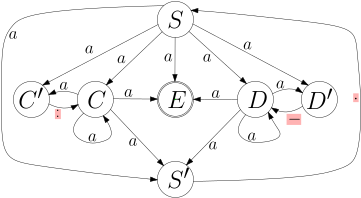
course1/public/img/finite-state-automata/nfsm-example-03-big.svg
Ich habe die Zeichen
./course1/wly/05/05-regular-grammar-to-fsm.wly:169:5.:-./course1/wly/05/05-regular-grammar-to-fsm.wly:169:27
rot unterlegt, weil man sie./course1/wly/05/05-regular-grammar-to-fsm.wly:169:31
sonst kaum erkennen würde in dem Automaten../course1/wly/05/05-regular-grammar-to-fsm.wly:170:5
Unser nichtdeterministischer endlicher Automat hat./course1/wly/05/05-regular-grammar-to-fsm.wly:176:5 Zustandsmenge ./course1/wly/05/05-regular-grammar-to-fsm.wly:177:5$Q = \{S, S', C, C', D, D', E\}$./course1/wly/05/05-regular-grammar-to-fsm.wly:177:19,./course1/wly/05/05-regular-grammar-to-fsm.wly:177:51 also./course1/wly/05/05-regular-grammar-to-fsm.wly:177:51 insgesamt sieben Zustände. Wenn wir genau nach Buch./course1/wly/05/05-regular-grammar-to-fsm.wly:178:5 vorgingen, müssten wir den endlichen Automaten auf der./course1/wly/05/05-regular-grammar-to-fsm.wly:179:5 Zustandsmenge ./course1/wly/05/05-regular-grammar-to-fsm.wly:180:5$2^Q$./course1/wly/05/05-regular-grammar-to-fsm.wly:180:19 definieren, er hätte also ./course1/wly/05/05-regular-grammar-to-fsm.wly:180:24$2^7 = 128$./course1/wly/05/05-regular-grammar-to-fsm.wly:180:51 ./course1/wly/05/05-regular-grammar-to-fsm.wly:180:62 viele Zustände. Das wäre jetzt für einen Rechner kein./course1/wly/05/05-regular-grammar-to-fsm.wly:181:5 Problem, aber in diesem vorlesungsskript doch etwas./course1/wly/05/05-regular-grammar-to-fsm.wly:182:5 ungünstig. Wir gehen ./course1/wly/05/05-regular-grammar-to-fsm.wly:183:5lazy./course1/wly/05/05-regular-grammar-to-fsm.wly:183:27 vor, erschaffen Zustände in./course1/wly/05/05-regular-grammar-to-fsm.wly:183:32 ./course1/wly/05/05-regular-grammar-to-fsm.wly:184:5$2^Q$./course1/wly/05/05-regular-grammar-to-fsm.wly:184:5 also nur dann, wenn wir sie brauchen. Wir beginnen./course1/wly/05/05-regular-grammar-to-fsm.wly:184:10 mit dem Zustand ./course1/wly/05/05-regular-grammar-to-fsm.wly:185:5$\{S\}$./course1/wly/05/05-regular-grammar-to-fsm.wly:185:21 und legen dann an jeden Zustand./course1/wly/05/05-regular-grammar-to-fsm.wly:185:28 Kanten an, jeweils mit ./course1/wly/05/05-regular-grammar-to-fsm.wly:186:5$a, :, -, .$./course1/wly/05/05-regular-grammar-to-fsm.wly:186:28 beschriftet, und./course1/wly/05/05-regular-grammar-to-fsm.wly:186:40 erschaffen, falls nötig, dabei neue Zustände. In der./course1/wly/05/05-regular-grammar-to-fsm.wly:187:5 folgenden Animation sehen Sie manchmal den mit einem Kreuz./course1/wly/05/05-regular-grammar-to-fsm.wly:188:5 markierten Fehlerzustand (trap state). Die akzeptierenden./course1/wly/05/05-regular-grammar-to-fsm.wly:189:5 Zustände sind mit fettem Rand markiert../course1/wly/05/05-regular-grammar-to-fsm.wly:190:5
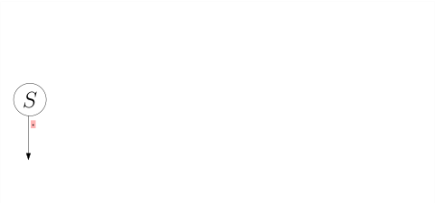
course1/public/img/finite-state-automata/transformation/02.svg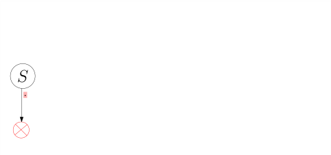
course1/public/img/finite-state-automata/transformation/03.svg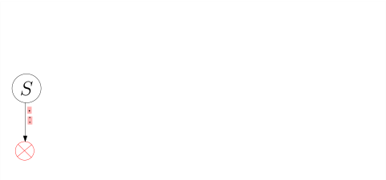
course1/public/img/finite-state-automata/transformation/04.svg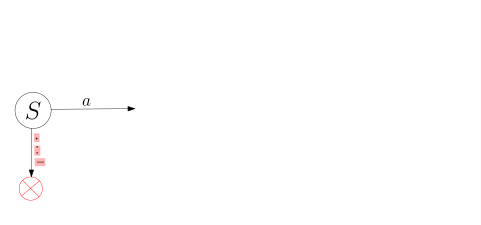
course1/public/img/finite-state-automata/transformation/06.svg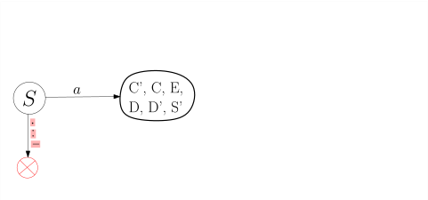
course1/public/img/finite-state-automata/transformation/07.svg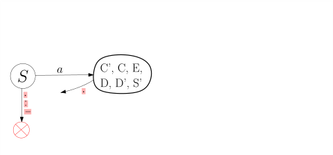
course1/public/img/finite-state-automata/transformation/08.svg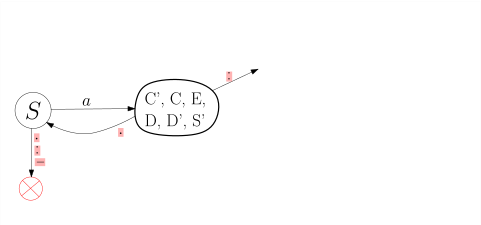
course1/public/img/finite-state-automata/transformation/10.svg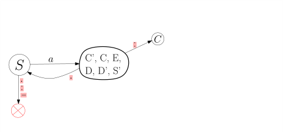
course1/public/img/finite-state-automata/transformation/11.svg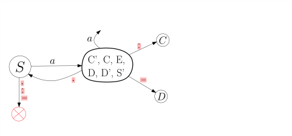
course1/public/img/finite-state-automata/transformation/14.svg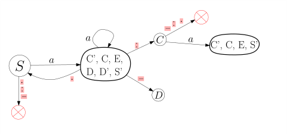
course1/public/img/finite-state-automata/transformation/17.svg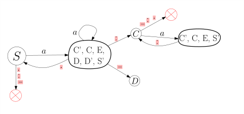
course1/public/img/finite-state-automata/transformation/18.svg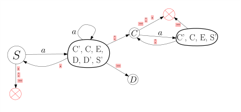
course1/public/img/finite-state-automata/transformation/19.svg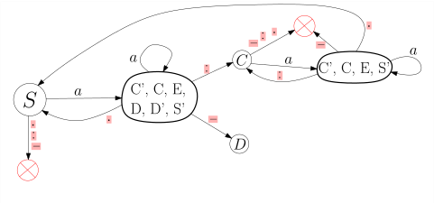
course1/public/img/finite-state-automata/transformation/21.svg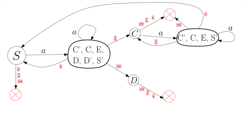
course1/public/img/finite-state-automata/transformation/22.svg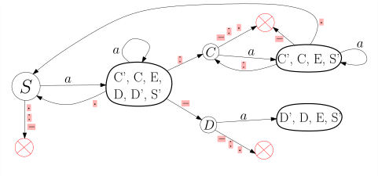
course1/public/img/finite-state-automata/transformation/23.svg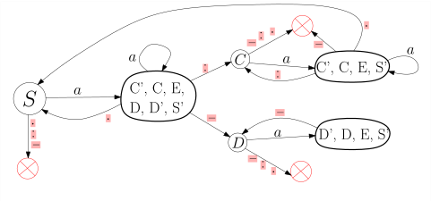
course1/public/img/finite-state-automata/transformation/24.svg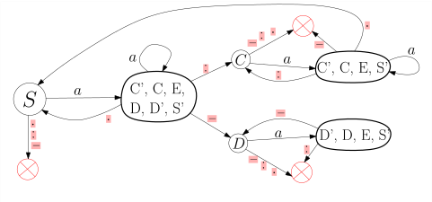
course1/public/img/finite-state-automata/transformation/25.svg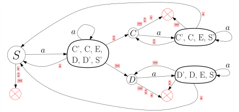
course1/public/img/finite-state-automata/transformation/27.svgDieser Automat hat deutlich weniger also 128 Zustände,./course1/wly/05/05-regular-grammar-to-fsm.wly:238:5 nämlich mit nur sieben genau so viele wie der./course1/wly/05/05-regular-grammar-to-fsm.wly:239:5 nichtdeterministische (es ist Zufall, dass beide gleich./course1/wly/05/05-regular-grammar-to-fsm.wly:240:5 viele Zustände haben; messen Sie dieser Tatsache keine./course1/wly/05/05-regular-grammar-to-fsm.wly:241:5 Bedeutung bei). Wir könnten nun von diesem Automaten./course1/wly/05/05-regular-grammar-to-fsm.wly:242:5 ausgehend wiederum eine reguläre Grammtik bauen, die in./course1/wly/05/05-regular-grammar-to-fsm.wly:243:5 diesem Falle sogar einfacher und klarer wäre als die./course1/wly/05/05-regular-grammar-to-fsm.wly:244:5 ursprüngliche. Wenn wir erweitert reguläre Grammatiken./course1/wly/05/05-regular-grammar-to-fsm.wly:245:5 erlauben, so können wir den deterministischen Automaten./course1/wly/05/05-regular-grammar-to-fsm.wly:246:5 besonders konzise in eine Grammatik fassen:./course1/wly/05/05-regular-grammar-to-fsm.wly:247:5
Die Zustände des deterministischen Automaten beschreiben./course1/wly/05/05-regular-grammar-to-fsm.wly:256:5
im Prinzip das, was wir uns merken müssen, wenn wir so./course1/wly/05/05-regular-grammar-to-fsm.wly:257:5
einen String "parsen": Zustand
./course1/wly/05/05-regular-grammar-to-fsm.wly:258:5$\{C',C,E,D,D',S'\}$./course1/wly/05/05-regular-grammar-to-fsm.wly:258:36,./course1/wly/05/05-regular-grammar-to-fsm.wly:258:56
der./course1/wly/05/05-regular-grammar-to-fsm.wly:258:56
in der Grammatik dann zum Nichtterminal
./course1/wly/05/05-regular-grammar-to-fsm.wly:259:5$T$./course1/wly/05/05-regular-grammar-to-fsm.wly:259:45
wird, bedeutet./course1/wly/05/05-regular-grammar-to-fsm.wly:259:48
beispielsweise
./course1/wly/05/05-regular-grammar-to-fsm.wly:260:5das Label hat schon begonnen, wir wissen./course1/wly/05/05-regular-grammar-to-fsm.wly:260:21
aber noch nicht, ob es eines mit
./course1/wly/05/05-regular-grammar-to-fsm.wly:261:5:./course1/wly/05/05-regular-grammar-to-fsm.wly:261:39
oder eines mit
./course1/wly/05/05-regular-grammar-to-fsm.wly:261:41-./course1/wly/05/05-regular-grammar-to-fsm.wly:261:58
./course1/wly/05/05-regular-grammar-to-fsm.wly:261:60
ist. Der Zustand
./course1/wly/05/05-regular-grammar-to-fsm.wly:262:5$\{C',C,E,S'\}$./course1/wly/05/05-regular-grammar-to-fsm.wly:262:22
bzw. das Nichtterminal
./course1/wly/05/05-regular-grammar-to-fsm.wly:262:37$C$./course1/wly/05/05-regular-grammar-to-fsm.wly:262:61
./course1/wly/05/05-regular-grammar-to-fsm.wly:262:64
heißt dann
./course1/wly/05/05-regular-grammar-to-fsm.wly:263:5:./course1/wly/05/05-regular-grammar-to-fsm.wly:263:17
./course1/wly/05/05-regular-grammar-to-fsm.wly:263:19wir./course1/wly/05/05-regular-grammar-to-fsm.wly:263:21
sind innerhalb eines Labels mit_
./course1/wly/05/05-regular-grammar-to-fsm.wly:263:21:./course1/wly/05/05-regular-grammar-to-fsm.wly:263:59../course1/wly/05/05-regular-grammar-to-fsm.wly:263:61
Übungsaufgabe 5.5.1./course1/wly/05/05-regular-grammar-to-fsm.wly:265:5 ./course1/wly/05/05-regular-grammar-to-fsm.wly:265:5 Erinnern Sie sich an ./course1/wly/05/05-regular-grammar-to-fsm.wly:266:9Aufgabe 5.3.1. Hier./course1/wly/05/05-regular-grammar-to-fsm.wly:266:9 sehen Sie einen nichtdeterministischen endlichen Automaten./course1/wly/05/05-regular-grammar-to-fsm.wly:267:9 für die Sprache ./course1/wly/05/05-regular-grammar-to-fsm.wly:268:9$L_4 \cup L_6$./course1/wly/05/05-regular-grammar-to-fsm.wly:268:25,./course1/wly/05/05-regular-grammar-to-fsm.wly:268:39 also die Sprache aller./course1/wly/05/05-regular-grammar-to-fsm.wly:268:39 Wörter ./course1/wly/05/05-regular-grammar-to-fsm.wly:269:9$1^n$./course1/wly/05/05-regular-grammar-to-fsm.wly:269:16 für ein ./course1/wly/05/05-regular-grammar-to-fsm.wly:269:21$n$./course1/wly/05/05-regular-grammar-to-fsm.wly:269:30,./course1/wly/05/05-regular-grammar-to-fsm.wly:269:33 das durch 4 oder 6 teilbar ist../course1/wly/05/05-regular-grammar-to-fsm.wly:269:33 Da unser Alphabet ./course1/wly/05/05-regular-grammar-to-fsm.wly:270:9$\Sigma = \{1\}$./course1/wly/05/05-regular-grammar-to-fsm.wly:270:27 eh nur aus einem./course1/wly/05/05-regular-grammar-to-fsm.wly:270:43 Zeichen besteht, habe ich auf die Beschriftung der Kanten./course1/wly/05/05-regular-grammar-to-fsm.wly:271:9 verzichtet../course1/wly/05/05-regular-grammar-to-fsm.wly:272:9
Dieser Automat hat 11 Zustände. Sein Potenzmengenautomat./course1/wly/05/05-regular-grammar-to-fsm.wly:279:9 hätte also ./course1/wly/05/05-regular-grammar-to-fsm.wly:280:9$2^{11} = 2048$./course1/wly/05/05-regular-grammar-to-fsm.wly:280:20 Zustände. Führen Sie die./course1/wly/05/05-regular-grammar-to-fsm.wly:280:35 Konstruktion ./course1/wly/05/05-regular-grammar-to-fsm.wly:281:9lazy./course1/wly/05/05-regular-grammar-to-fsm.wly:281:23 durch, indem Sie vom Startzustand./course1/wly/05/05-regular-grammar-to-fsm.wly:281:28 ./course1/wly/05/05-regular-grammar-to-fsm.wly:282:9$\{S\}$./course1/wly/05/05-regular-grammar-to-fsm.wly:282:9 ausgehend die Folgezustände konstruieren. Wieviele./course1/wly/05/05-regular-grammar-to-fsm.wly:282:16 Zustände bekommen Sie?./course1/wly/05/05-regular-grammar-to-fsm.wly:283:9